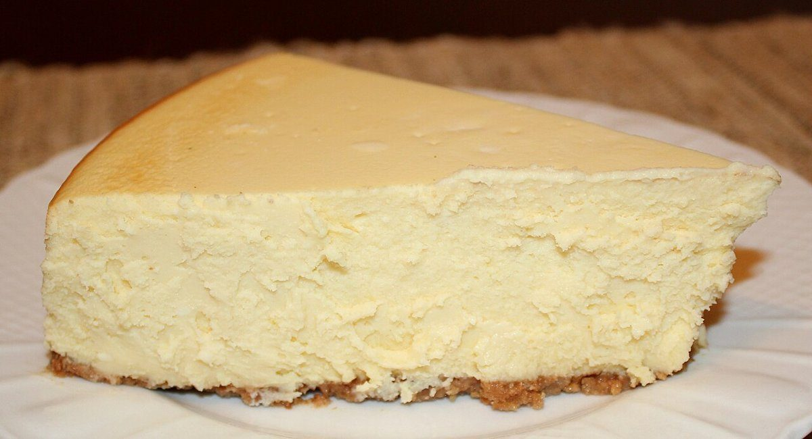

制作側の連想
「footpath」から、柵の踏み越し段へ
店名の由来は分かりません。制作側は、footpath(フットパス)という英語が「歩いて通る小道」を指すことから、小道が柵や石垣を越えるところに設けられた、数段の踏み台(スタイル)を連想しました。このサイトはそれに見立てて、5つのページを「一段目から五段目」と数えています。制作側の連想で、お店の理念・由来とは無関係です。
五段の踏み台(イメージ)
一段ずつ、のぼっていく。
下の写真は、段が上がるように並べた洋菓子・焼き菓子のイメージ写真です。お店で提供しているものではなく、国外または撮影地不明のフリー素材です。
- 一段目

撮影地不明のイメージ - 二段目

国外のイメージ(イギリス) - 三段目

国外のイメージ(アメリカ) - 四段目

撮影地不明のイメージ - 五段目

国外のイメージ(インド)
ご案内
お店のこと(確認できたものだけ)
| 所在地 | 〒669-2513 兵庫県丹波篠山市福住378 |
|---|---|
| 電話 | なし |
| 営業時間 | 準備中 |
| 定休日 | 準備中 |
| ご予約 | 準備中 |
| 駐車場 | 準備中 |
| SNS | Instagram @footpathcakes |